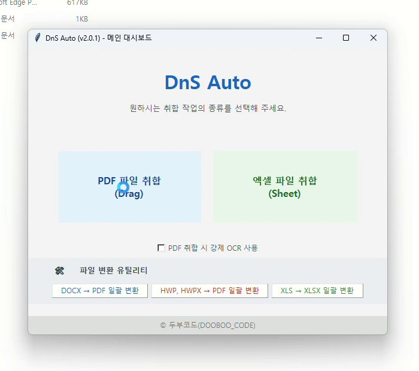
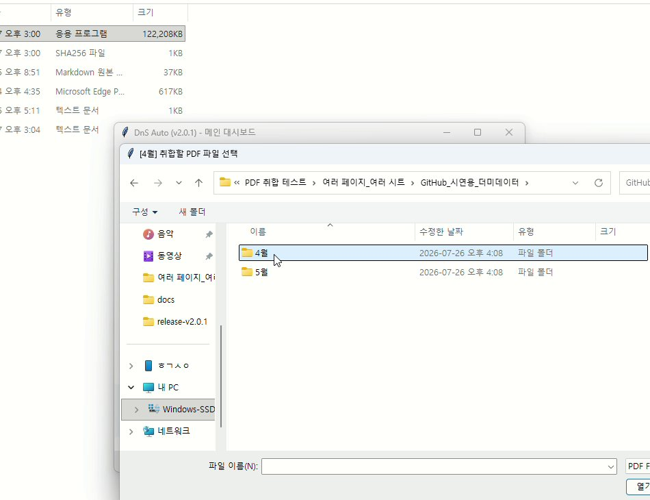
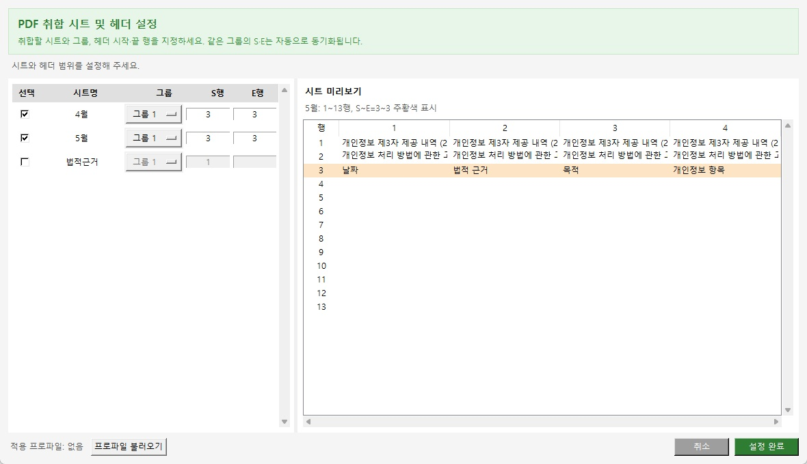
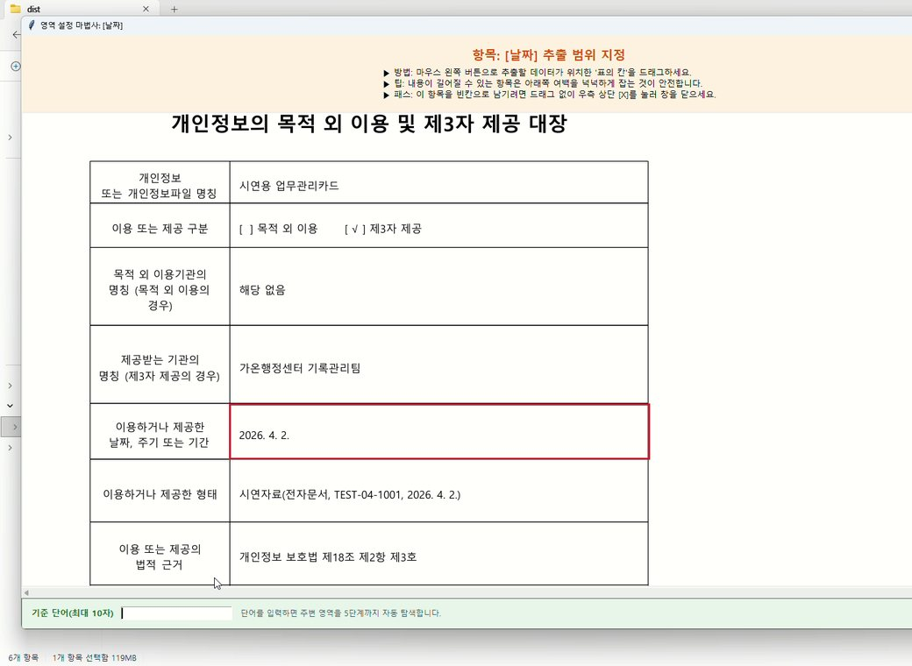
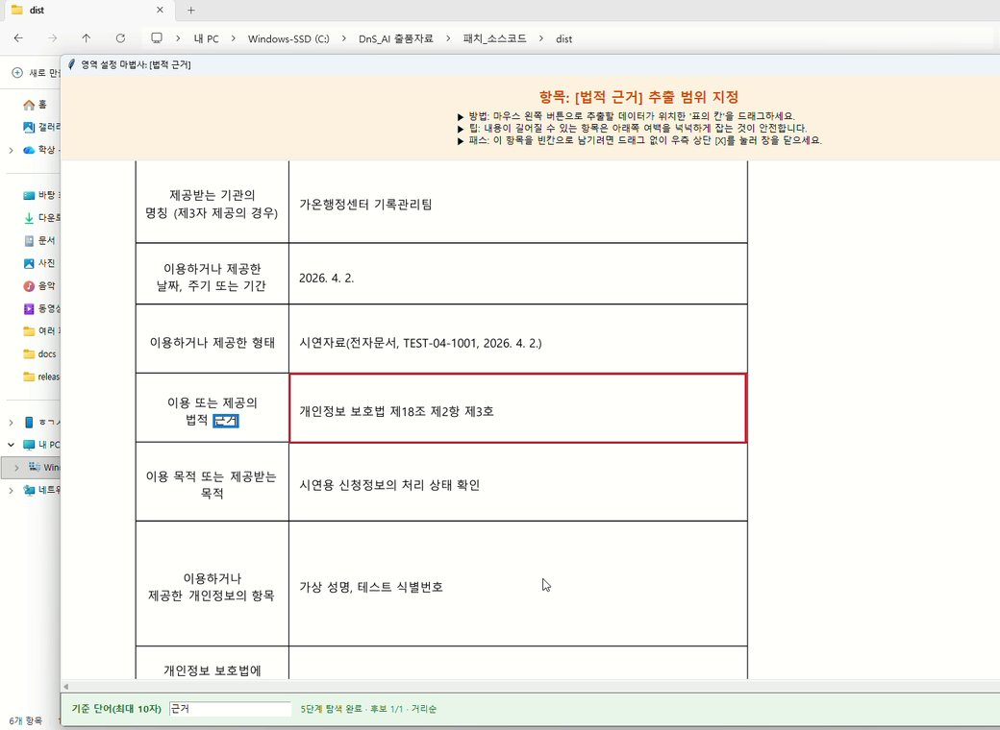
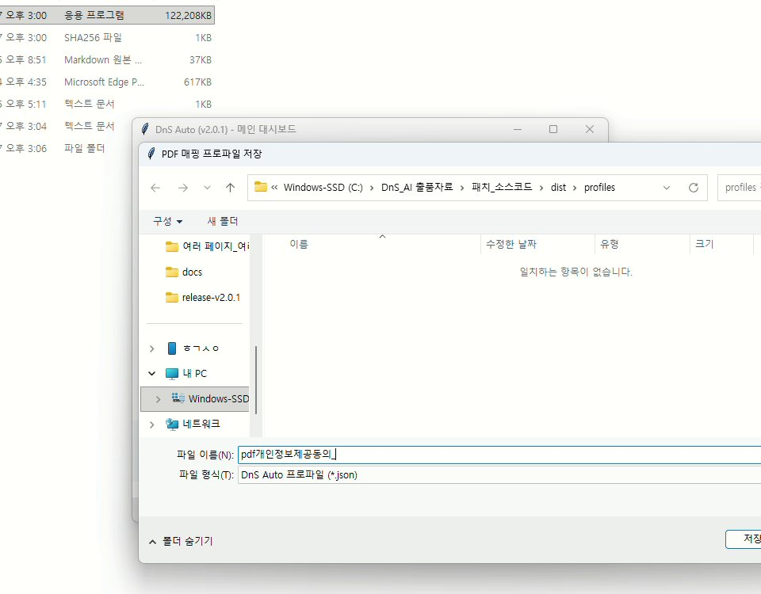
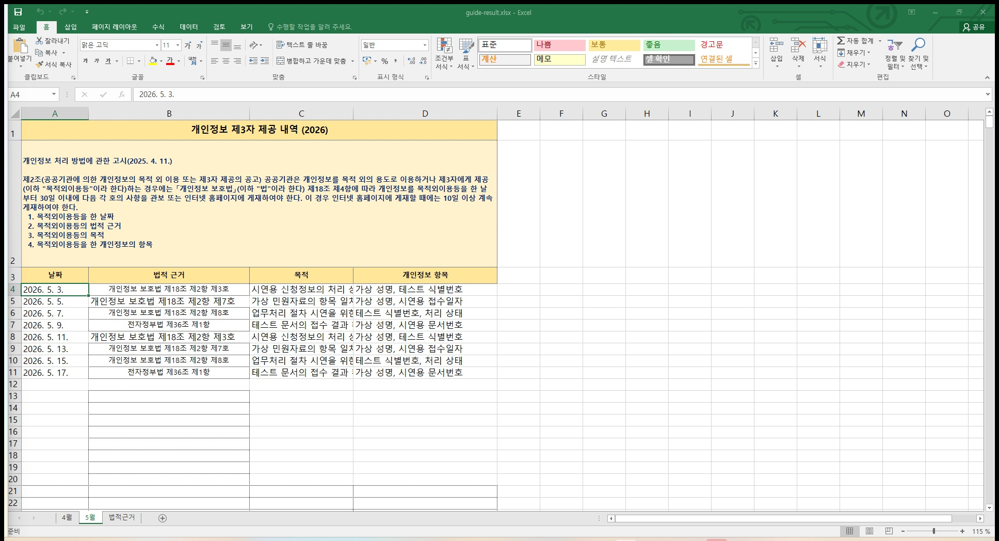
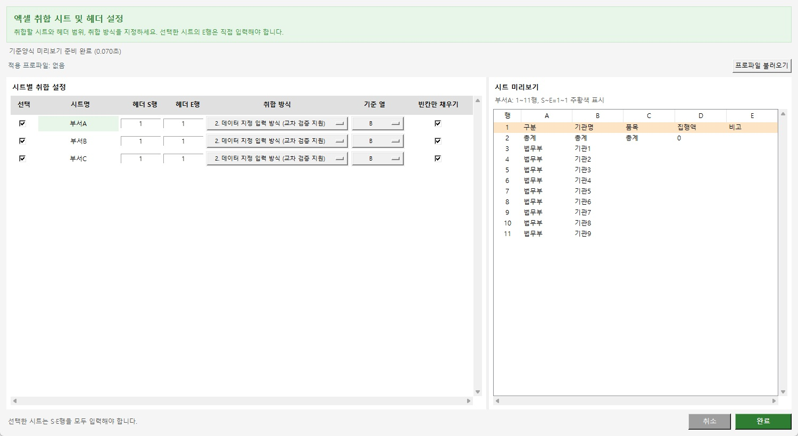
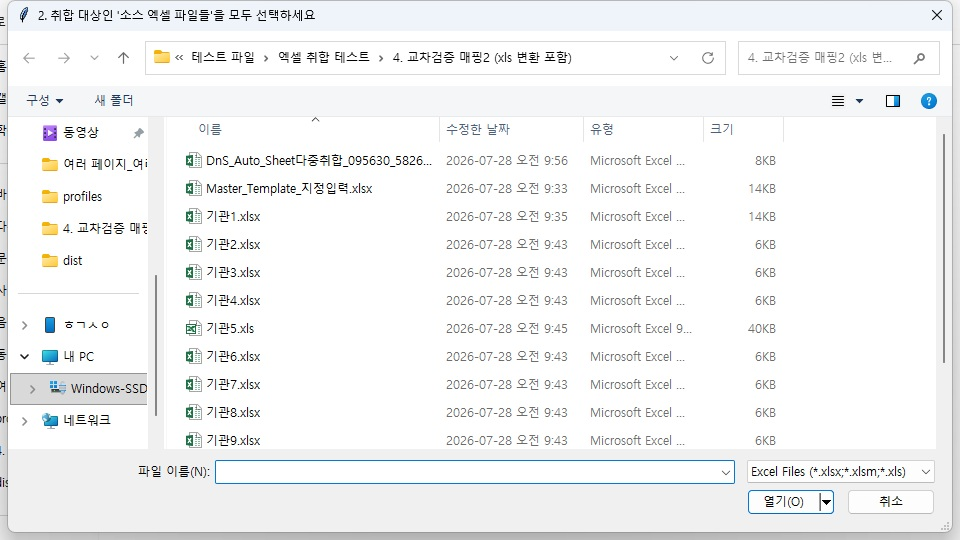
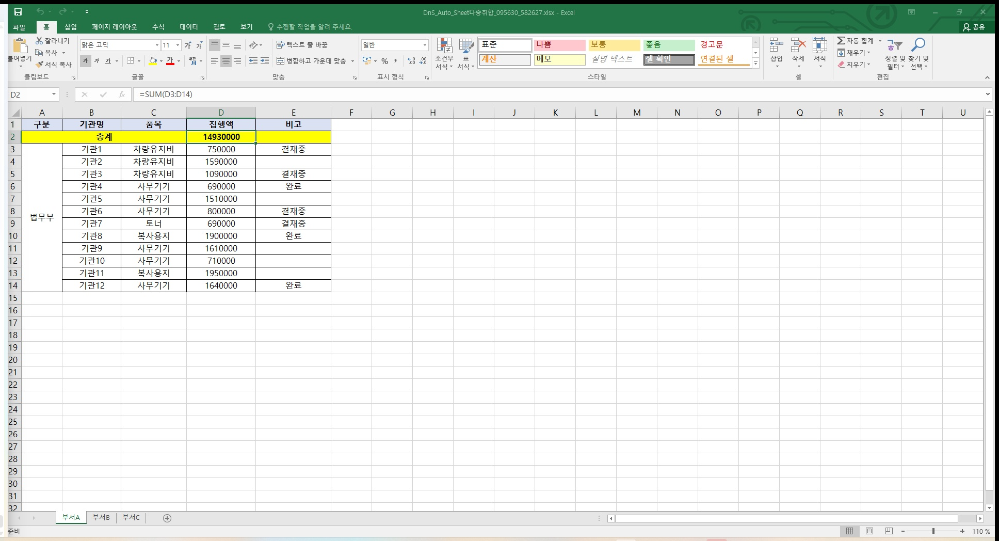

DnS Auto 사용자 설명서 - 직접 실행용
DnS Auto.exe입니다.빠른 시작
PDF 취합
PDF 파일 취합(Drag)선택- 기준 Excel 양식과 시트·S행·E행 지정
- PDF의 실제 값 영역을 드래그
- 필요하면 가까운 고정 문구를 기준 단어로 확정
- 결과의 첫·중간·마지막 행 확인
Excel 취합
Excel 파일 취합(Sheet)선택- 기준 양식과 시트·S행·E행 지정
- 누적 적재 또는 지정 입력 선택
- 입력 파일 선택
- 결과의 기준 열과 표본 행 확인
상세 설명
1. 문서 목적
- DnS Auto의 설치 조건, 기능, 처리 절차 및 오류 대응 방법 안내
- PDF 및 Excel 자료 취합 업무의 표준 처리 절차 제시
- DOC/DOCX, HWP/HWPX 및 XLS 파일 변환 기능의 사용 조건 안내
- 인터넷 연결이 없는 환경에서의 실행 및 보안 유의사항 안내
2. 프로그램 개요
DnS Auto는 반복적으로 제출되는 PDF 및 Excel 자료를 기준 Excel 양식에 취합하는 Windows용 업무 지원 프로그램이다.
주요 기능은 다음과 같다.
- PDF 지정 영역의 텍스트를 Excel 양식에 취합
- 스캔 PDF의 지정 영역을 로컬 OCR로 판독
- 기준 단어를 이용한 PDF 추출 좌표 보정
- PDF 설정의 매핑 프로파일 저장 및 재사용
- PDF·Excel 헤더 범위 시트 미리보기
- 여러 Excel 파일의 시트별 데이터 취합
- DOC/DOCX 파일의 PDF 일괄 변환
- HWP/HWPX 파일의 PDF 일괄 변환
- XLS 파일의 XLSX 일괄 변환
- 처리 결과 및 오류 내역의 감사 로그 기록
2.1 일반적인 취합 방식과의 차이
이 비교는 특정 제품의 우열을 평가하기 위한 것이 아니라, 일반적인 복사·붙여넣기, 단순 행 병합 및 고정 좌표 추출 방식과 DnS Auto의 처리 구조를 설명하기 위한 것이다. 다른 프로그램도 제품과 버전에 따라 유사한 기능을 제공할 수 있다.
| 업무 상황 | 일반적인 처리 방식 | DnS Auto의 처리 방식과 효과 |
|---|---|---|
| PDF에서 일부 항목만 취합 | 전체 텍스트를 추출한 후 필요한 값을 다시 정리하거나 고정 좌표를 반복 적용 | 사용자가 필요한 값 영역을 직접 지정하여 불필요한 문자를 줄이고, 기준 단어와 상대 위치로 페이지별 위치 변화를 보정한다. |
| 같은 기준 단어가 여러 곳에 존재 | 첫 검색 결과를 사용하거나 페이지마다 위치를 다시 지정 | 첫 페이지에서 거리순 후보를 눈으로 확인해 한 번만 확정하고, 이후 페이지는 직전 앵커 좌표를 기준으로 자동 추적한다. |
| 스캔 PDF 처리 | 별도 OCR 프로그램에서 변환한 후 결과를 다시 취합 | 로컬 OCR 모델을 이용해 지정 영역을 프로그램 안에서 판독하며 인터넷 전송 없이 처리한다. |
| 여러 Excel 파일의 행 추가 | 소스 행을 선택 순서대로 마지막 행 아래에 이어 붙임 | 단순 누적 적재와 기준 열 교차매핑 중 업무 목적에 맞는 방식을 선택한다. |
| 파일마다 대상 행의 위치가 다름 | 담당자가 기관명·접수번호 등을 검색해 올바른 행에 직접 복사 | 기준 열의 값이 같은 행을 찾아 결과를 기록하므로 소스 파일의 행 순서, 전체 행 수 또는 대상 행 위치가 달라도 기준 양식의 지정된 대상 행에 배치할 수 있다. |
| 기준 양식에 총계·설명 행이 추가됨 | 행 번호가 한 칸씩 밀려 잘못된 대상에게 값이 입력될 수 있음 | 행 번호가 아니라 기관명·접수번호 같은 업무 키를 비교하므로 중간 행 추가에 따른 위치 차이의 영향을 줄인다. |
| 기존 값과 수식 보존 | 붙여넣기 과정에서 기존 값이나 수식이 덮어써질 수 있음 | 빈칸만 채우기를 사용해 값이나 수식이 있는 셀은 유지하고 비어 있는 셀만 채운다. |
| 실패 파일 확인 | 완료 후 누락 여부를 사용자가 다시 대조 | 실패·누락 파일과 중복 기준 키를 메시지와 감사 로그에서 확인할 수 있다. |
기준 열 교차매핑이 필요한 이유
기준 열 교차매핑은 단순히 여러 파일을 합치는 기능이 아니다. 각 소스 행의
기관명, 접수번호, 관리번호와 같은 식별값을 기준 양식의 식별값과
비교하고, 일치하는 행에만 나머지 값을 기록하는 기능이다.
예를 들어 기준 양식에서 A기관이 6행에 있지만 소스 파일에서는
A기관 자료가 2행에 있더라도, 기관명을 기준 열로 선택하면 2행을
그대로 복사하지 않고 기준 양식의 A기관 행을 찾아 기록한다. 다른
시트에 총계 행이 추가되어 기관별 데이터가 한 행씩 아래로 이동한 경우에도
동일하게 기관명을 기준으로 대상 행을 찾는다.
이 방식은 다음 상황에서 특히 유효하다.
- 여러 기관이 서로 다른 행 순서나 일부 행만 포함한 파일을 제출하는 경우
- 기준 양식에 총계·안내·공백 행이 추가되어 소스와 행 번호가 다른 경우
- 접수번호별 진행 결과를 기존 명부의 해당 대상자 행에 채우는 경우
- 기존 기준 양식의 정렬 순서를 유지하면서 여러 제출 파일의 값만 보완하는 경우
따라서 교차매핑의 주요 장점은 처리 건수 자체보다, 사람이 파일마다 대상 행을 검색하고 복사하는 과정에서 발생할 수 있는 오입력과 행 위치 착오를 줄이는 데 있다. 단, 기준 열 값이 정확히 일치해야 하므로 앞뒤 공백, 앞자리 0, 숫자·문자 형식 및 중복 키는 취합 전에 확인해야 한다.
3. 실행 환경
3.1 필수 환경
- 운영체제: Windows 10 또는 Windows 11 64비트
- 실행 권한: 실행 파일 및 결과 저장 위치에 대한 읽기·쓰기 권한
- 화면 환경: Tkinter 기반 데스크톱 창을 표시할 수 있는 일반 사용자 환경
3.2 설치가 필요하지 않은 항목
DnS Auto.exe에는 다음 구성요소가 포함되어 있다.
- Python 3.12 실행 환경
- PDF 처리 모듈
- Excel 파일 처리 모듈
- 한국어 PP-OCRv5 인식 모델
- ONNX Runtime CPU 추론 모듈
- 이미지 처리 모듈
다음 항목은 실행 PC에 별도로 설치하지 않는다.
- Python
- pip
- Python 패키지
- OCR 모델
프로그램의 PDF 취합, OCR 및 Excel 취합 기능은 인터넷 연결 없이 실행된다.
3.3 선택 기능별 외부 프로그램
| 기능 | 필요한 외부 프로그램 | 미설치 시 처리 |
|---|---|---|
| DOC/DOCX → PDF | Microsoft Word | 기능 실행 불가 |
| HWP/HWPX → PDF | 한컴오피스 한글 | 기능 실행 불가 |
| XLS → XLSX 서식 보존 변환 | Microsoft Excel | 값 중심 대체 변환 선택 가능 |
Excel 취합 중 .xls 소스 사용 |
Microsoft Excel | 해당 .xls 파일 제외 |
DOCX, HWP/HWPX 또는 XLS 문서 변환은 해당 프로그램이 PC에 설치되어 있어야 합니다.
4. 통합 포터블 폴더 구조
압축을 푼 DnS Auto 폴더 전체가 하나의 프로그램입니다. EXE만 따로 떼어 옮기지 말고 폴더 전체를 이동하세요.
DnS Auto\ ├─ DnS Auto.exe 직접 실행용 GUI ├─ DnS Auto MCP.exe AI 연동용 ├─ profiles\sheet\ Excel 설정 프로필 ├─ profiles\pdf\ PDF 영역 매핑 프로필 ├─ inputs\ AI 연동 입력 기본 폴더 ├─ outputs\ AI 연동 결과 기본 폴더 ├─ GUI_GUIDE.html 현재 문서 ├─ MCP_GUIDE.html AI 연동 설명서 └─ USER_GUIDE.html 전체 사용 안내
프로파일 불러오기에서 선택할 수 있습니다.5. 최초 실행
- 배포 ZIP을 원하는 쓰기 가능한 위치에 모두 압축 해제한다.
DnS Auto폴더 안의DnS Auto.exe를 실행한다.- 실행 파일을 두 번 클릭한다.
- 최초 실행 시 보안 프로그램의 파일 검사로 시작이 지연될 수 있으므로 완료될 때까지 대기한다.
- Windows SmartScreen 경고가 표시되면 기관 보안 정책 및 배포 파일의 해시값을 확인한 후 실행 여부를 결정한다.
- 메인 화면의 프로그램명이
DnS Auto (v1.0.0)인지 확인한다.
DnS Auto.exe는 실행 시 GUI 내부 구성요소를 임시 폴더에 전개하며 정상 종료 시 자동으로 정리합니다. 포터블 폴더의 profiles와 설명서 파일은 그대로 유지됩니다.
6. 메인 화면 구성
메인 화면은 다음 기능으로 구성된다.
| 영역 | 기능 |
|---|---|
| PDF 파일 취합(Drag) | PDF 지정 영역의 텍스트 또는 OCR 결과를 Excel 양식에 기록 |
| PDF 취합 시 강제 OCR 사용 | PDF 텍스트 레이어를 사용하지 않고 지정 영역을 OCR로 판독 |
| Excel 파일 취합(Sheet) | 여러 Excel 파일의 동일 시트 데이터를 기준 파일에 취합 |
| DOCX → PDF 일괄 변환 | DOC 및 DOCX 파일을 PDF로 변환 |
| HWP, HWPX → PDF 일괄 변환 | HWP 및 HWPX 파일을 PDF로 변환 |
| XLS → XLSX 일괄 변환 | 구형 XLS 파일을 XLSX로 변환 |

메인 대시보드에서 수행할 취합 또는 파일 변환 기능을 선택한다. 스캔 PDF를
처리할 때만 PDF 취합 시 강제 OCR 사용을 선택한다.
6.1 처음 사용할 때의 권장 순서
처음부터 여러 파일을 한꺼번에 처리하지 말고 다음 순서로 확인한다.
- 원본 파일을 별도 폴더에 복사하여 작업용 사본을 만든다.
- 기준 Excel 양식과 대표 입력 파일 1개만 같은 작업 폴더에 준비한다.
- 사용할 기능을 실행하고 결과 파일을 확인한다.
- 열 위치, 행 위치, 정렬 및 추출 문자열이 맞으면 나머지 파일을 일괄 처리한다.
- 결과를 확인한 후에만 원본 업무 절차에 적용한다.
프로그램은 원본 파일을 직접 수정하지 않고 새 결과 파일을 만든다. 다만 외부 프로그램 강제 종료나 저장 공간 부족이 발생할 수 있으므로 원본과 작업용 사본을 분리하는 것을 권장한다.
6.2 어떤 기능을 선택해야 하는가
| 하려는 작업 | 선택할 기능 |
|---|---|
| 여러 PDF의 같은 위치에 있는 값을 Excel로 모으기 | PDF 파일 취합(Drag) |
| 스캔된 PDF의 글자를 읽어 Excel로 모으기 | 강제 OCR 선택 후 PDF 파일 취합(Drag) |
| 여러 Excel 파일의 행을 한 파일 아래로 이어 붙이기 | Excel 파일 취합(Sheet)의 누적 적재 |
| 이름·접수번호 등 같은 키가 있는 행에 값을 채우기 | Excel 파일 취합(Sheet)의 지정 입력과 기준 열 |
| 행 위치가 완전히 같은 Excel끼리 셀을 채우기 | 지정 입력에서 기준 열을 선택하지 않음 |
| 여러 Word 문서를 PDF로 바꾸기 | DOCX → PDF 일괄 변환 |
| 여러 한글 문서를 PDF로 바꾸기 | HWP, HWPX → PDF 일괄 변환 |
오래된 .xls 파일을 .xlsx로 바꾸기 |
XLS → XLSX 일괄 변환 |
6.3 작업 전 확인표
- 기준 Excel 파일이 열려 있으면 닫는다.
- 결과를 저장할 폴더에 쓰기 권한과 충분한 여유 공간이 있는지 확인한다.
- 암호가 걸린 PDF·Word·Excel 파일은 사전에 암호를 해제한다.
- Word 또는 HWP 변환 시 해당 프로그램을 먼저 정상 실행할 수 있는지 확인한다.
- 여러 입력 파일은 표 구조와 시트 이름이 같은지 대표 파일로 확인한다.
- 이전 결과 파일과 혼동되지 않도록 작업별 폴더를 구분한다.
7. PDF 파일 취합
7.1 기능 개요
PDF의 각 페이지에서 사용자가 지정한 영역을 판독하여 기준 Excel 파일의 해당 시트에 행 단위로 기록한다.
처리 우선순위는 다음과 같다.
- PDF 텍스트 레이어 판독
- 텍스트 레이어가 없는 이미지 페이지는 한국어 OCR로 기준 단어와 지정 영역 판독
- 텍스트 레이어가 있으나 정상적인 문자를 얻을 수 없는 경우 지정 영역 OCR로 보완
- 강제 OCR 선택 시 텍스트 레이어를 사용하지 않고 지정 영역을 OCR로 판독
기준 페이지를 정할 때는 선택한 PDF 중 검색 가능한 텍스트가 있는 문서를 우선 사용한다. 모든 PDF가 이미지로만 구성된 경우에는 OCR로 기준 단어 후보를 찾아 최초 영역 설정을 진행한다.
7.2 사전 준비
- 취합 대상 Excel 양식을 준비한다.
- PDF 페이지의 항목 배치가 동일하거나 유사한지 확인한다.
- Excel 양식의 헤더 시작 행과 끝 행을 확인한다.
- 암호화된 PDF는 사전에 암호를 해제한다.
.xls양식은.xlsx또는.xlsm으로 변환한다.
7.3 강제 OCR 사용 기준
다음 경우에 PDF 취합 시 강제 OCR 사용을 선택한다.
- PDF 텍스트를 복사했을 때 한글이 깨지는 문서
- PDF 내부 글꼴 매핑 오류로 잘못된 문자가 추출되는 문서
- 텍스트 레이어와 실제 화면의 내용이 서로 다른 문서
다음 경우에는 기본 설정을 유지한다.
- 검색 및 복사가 가능한 일반 PDF
- 텍스트 레이어가 없는 일반적인 스캔 PDF
- 처리 속도를 우선하는 경우
- 정상 PDF와 스캔 PDF가 함께 있는 대량 문서
이미지 페이지는 기본 설정에서도 자동으로 OCR 처리된다. 따라서 스캔 PDF라는 이유만으로 강제 OCR을 선택할 필요는 없다.
OCR은 CPU로 실행되므로 일반 텍스트 추출보다 처리 시간이 길 수 있다.
7.4 처리 절차
- PDF에서 글자를 검색하거나 복사했을 때 정상적으로 표시되는지 확인한다.
- 텍스트가 깨지거나 화면 내용과 텍스트 레이어가 다를 때만
PDF 취합 시 강제 OCR 사용을 선택한다. PDF 파일 취합(Drag)을 선택한다.- 데이터가 기록될 기준 Excel 양식을 선택한다.
- 목록에서 실제로 값을 채울 시트를 선택한다.
- 동일한 열 구성과 헤더를 가진 시트는 같은 그룹으로 지정한다.
- 구조가 다른 시트는
개별로 지정한다. - Excel에서 헤더가 시작되는 S행과 끝나는 E행을 입력한다. E행은 반드시 입력한다.
- 우측 시트 미리보기에서 파란색 S행 또는 주황색 S~E 범위가 실제 헤더와 일치하는지 확인한다.
- 저장된 매핑 프로파일을 재사용하려면
프로파일 불러오기를 선택하고 적용 상태를 확인한다. - 새로 설정하는 경우 해당 시트에 사용할 PDF 파일을 선택한다.
- 표시된 PDF 첫 페이지에서 안내된 Excel 열에 해당하는 값 영역을 드래그한다.
- 파란 선택 테두리가 실제 값 전체를 포함하는지 확인한다.
- 값 위치가 페이지마다 조금씩 움직이면 인접한 고정 문구를 기준 단어로 입력한다.
- 같은 기준 단어가 여러 곳에 있으면
[다음]으로 강조 위치를 확인한 후[확정]한다. - 위치가 항상 같거나 적절한 기준 단어가 없으면 기준 단어 입력을 취소한다.
- 다음 Excel 열 안내가 표시되면 같은 방식으로 영역을 지정한다.
- 모든 열의 영역 지정을 마치면 필요에 따라 현재 설정을 매핑 프로파일로 저장한다.
- 프로그램이 나머지 PDF와 페이지를 자동 처리한다.
- 진행 창에서 현재 파일, 현재 페이지, 판독 방식 및 예상 잔여 시간을 확인한다.
- 완료 메시지에서 결과 경로와 제외 페이지 내역을 확인하고 Excel 파일을 연다.
- 첫 행, 중간 행, 마지막 행을 표본으로 확인한다.

기준 양식의 시트에 대응하는 월별 또는 업무별 PDF 폴더를 선택한다. 서로 다른 시트에 입력할 PDF를 한 번에 혼합해서 선택하지 않는다.
7.5 실제 영역 지정 예시
Excel 헤더가 다음과 같다고 가정한다.
| A열 | B열 | C열 |
|---|---|---|
| 성명 | 생년월일 | 접수번호 |
PDF 첫 페이지에서 다음과 같이 지정한다.
성명안내가 표시되면홍길동이 들어 있는 값 칸만 드래그한다.- 기준 단어로 값 칸 왼쪽의
성명을 입력한다. - 강조된
성명이 원하는 표의 항목인지 확인하고 확정한다. 생년월일안내가 표시되면 날짜 값 전체를 드래그한다.접수번호안내가 표시되면 번호의 앞자리와 뒷자리가 모두 포함되도록 드래그한다.
항목명 자체를 추출하려는 것이 아니라면 성명이라는 글자를 드래그하지
않고 실제 값인 홍길동 영역을 드래그해야 한다. 기준 단어는 추출할 값이
아니라 값 위치를 찾기 위한 고정 표지로 사용한다.
7.6 시트 그룹 지정
- 같은 그룹의 시트는 헤더 행과 PDF 영역 설정을 공유한다.
- 그룹 내 첫 번째 시트가 기준 시트로 사용된다.
- 하나의 시트만 지정된 그룹은 개별 처리로 전환된다.
- 동일 그룹에는 열 구조와 헤더 구성이 같은 시트만 배치한다.
7.7 헤더 행 입력
- S행: 헤더가 시작되는 행 번호
- E행: 헤더가 끝나는 행 번호
- 데이터 기록 시작 행: E행의 다음 행
- 초기값은 S행
1, E행 빈칸이며 선택한 시트의 E행은 반드시 입력한다. - S행만 입력하면 미리보기에서 S-10~S+10행을 표시하고 S행을 파란색으로 표시한다.
- S행과 E행을 모두 입력하면 S-10
E+10행을 표시하고 SE 전체를 주황색으로 표시한다. - S-10이 1행보다 작으면 1행부터 표시하며 E+10 구간은 실제 데이터가 없어도 빈 행으로 표시한다.
- 값을 연속 입력할 때는 마지막 입력 후 약 250ms 뒤에 미리보기를 갱신한다.
병합된 헤더는 병합 영역의 왼쪽 위 값을 기준으로 해석된다. 여러 행의 헤더 값은 열 단위로 결합된다. 미리보기 역시 실제 취합과 같은 병합셀 판독 방식을 사용하므로 병합 범위의 값이 각 열에 표시된다.

7.8 영역 지정

- 마우스 왼쪽 버튼으로 실제 값이 포함되는 표의 칸을 지정한다.
- 값의 길이가 변할 수 있으면 영역의 여백을 포함한다.
- 선택 영역의 폭 또는 높이가 5포인트 미만이면 판독하지 않는다.
- 특정 항목을 비워 두려면 영역을 지정하지 않고 창을 닫는다.
- 같은 열 이름이 반복되면 프로그램이 내부적으로 열 번호를 구분하여 처리한다.
영역 지정 시 다음 기준을 적용한다.
- 글자가 테두리에 닿지 않도록 좌우·상하에 작은 여백을 둔다.
- 너무 넓게 지정하여 옆 칸의 글자나 항목명이 포함되지 않게 한다.
- 이름이나 주소처럼 길이가 달라지는 값은 대표 파일 중 가장 긴 값을 기준으로 폭을 정한다.
- 여러 줄 주소는 예상되는 줄 수 전체가 들어가도록 높이를 정한다.
- 체크 표시나 도장처럼 일반 글자가 아닌 항목은 OCR 결과가 일정하지 않을 수 있다.
7.9 기준 단어를 이용한 좌표 보정
기준 단어는 페이지마다 표 위치가 소폭 이동하는 문서에서 사용한다.
예시:
기준 단어: 성명
추출 영역: 성명 항목 오른쪽의 실제 이름 값
처리 방식은 다음과 같다.
- 첫 페이지에서 추출 영역을 지정하고 기준 단어 입력
- 지정 영역 주변을 1~5단계로 자동 확장하여 전체 후보 검색
- 중간 단계의 확인창 없이 5단계 검색 완료 후 후보를 거리순으로 표시
- 후보가 여러 개이면
[다음]을 선택하여 강조 위치를 순차 확인 - 마지막 후보에서
[다음]을 선택하면 첫 번째 후보로 이동 - 사용할 후보에서
[확정]을 선택하여 앵커 좌표와 추출 영역의 상대 위치 저장 [취소]를 선택하면 기준 단어를 사용하지 않고 최초 절대좌표로 처리- 다음 페이지부터 직전 페이지의 앵커 좌표 주변에서 같은 기준 단어 자동 검색
- 직전 앵커 좌표와 가장 가까운 후보를 자동 선택하고 저장된 상대 위치로 추출 영역 보정
- 현재 페이지의 앵커 좌표를 다음 페이지 탐색 기준으로 자동 갱신
- 기준 단어를 찾지 못하면 최초 절대좌표 사용

기준 단어를 입력하면 후보 위치가 강조된다. 같은 단어가 여러 곳에 있으면
[다음]으로 원하는 위치까지 순회한 후 [확정]한다.
유의사항:
- 기준 단어는 선택 영역과 가까운 고정 문구로 지정한다.
- 기준 단어는 앞뒤 공백을 제외하고 최대 10자까지 입력할 수 있으며, 중간 공백은 유지되고 글자 수에 포함된다.
- 동일 문구가 여러 곳에 반복되면 가장 가까운 위치부터 후보가 표시된다.
- 후보가 표시되면 캔버스가 해당 위치로 이동하고 파란색 테두리로 강조한다.
- 후보 선택은 첫 페이지에서 한 번만 수행하며 이후 페이지는 사용자 확인 없이 자동 추적한다.
- 기준 단어 검색 중에는 단계별 오류창이나 확인창을 표시하지 않는다.
- 기준 단어 검색은 PDF 텍스트 레이어를 이용한다.
- 텍스트 레이어가 없는 완전한 스캔 PDF에서는 기준 단어 보정이 적용되지 않고 절대좌표가 사용될 수 있다.
- 위치 이동이 없는 문서는 기준 단어를 입력하지 않아도 된다.
기준 단어를 잘 고르는 방법
좋은 기준 단어:
- 모든 페이지에 동일하게 인쇄된 항목명
- 추출 영역과 가까운 문구
- 해당 표 안에서 한 번만 나타나는 문구
- 10자 이하이며 글자 사이 공백까지 항상 같은 문구
피해야 할 기준 단어:
- 페이지마다 값이 바뀌는 이름이나 번호
- 머리말과 본문 등 여러 위치에 반복되는 짧은 단어
- OCR로만 보이고 PDF 텍스트 검색이 되지 않는 문구
- 추출 영역에서 지나치게 멀리 떨어진 문구
[다음], [확정], [취소]의 의미
[다음]: 현재 강조된 후보를 사용하지 않고 다음 후보를 확인한다.[확정]: 현재 강조된 후보와 드래그 영역의 상대 위치를 저장한다.[취소]: 기준 단어 보정을 사용하지 않고 처음 드래그한 절대 위치를 사용한다.
후보 선택은 첫 페이지에서 한 번만 수행한다. 두 번째 페이지부터는 저장된 상대 위치와 직전 페이지의 앵커 위치를 이용해 자동으로 처리하므로 페이지마다 사용자가 후보를 선택할 필요가 없다.
7.10 매핑 프로파일 저장 및 불러오기
매핑 프로파일은 PDF 취합 설정 창에서 입력한 시트 선택, 그룹, S·E행, 열별 드래그 영역, 기준 단어 및 상대좌표 정보를 JSON 파일로 저장한다. 동일하거나 호환되는 양식을 반복 처리할 때 프로파일을 불러오면 영역을 다시 드래그하지 않고 기존 설정으로 취합을 시작할 수 있다.
새 프로파일 저장
- 시트 그룹과 S·E행을 설정한다.
- 각 열의 값 영역과 필요한 기준 단어를 지정한다.
- 영역 설정 완료 후 프로파일 저장을 선택한다.
- 업무와 양식을 구분할 수 있는 이름을 입력한다.
- 저장 완료 메시지와 프로파일명을 확인한다.
PDF 매핑 프로파일은 포터블 폴더의 profiles/pdf 하위 폴더에 저장하며, DnS Auto MCP.exe와 공유한다.
해당 경로에
쓰기 권한이 없으면 사용자별 쓰기 가능한 대체 경로를 사용하고 그 위치를
안내한다.
기존 프로파일 불러오기
- 기준 Excel 양식을 선택하고 PDF 설정 창을 연다.
프로파일 불러오기를 선택한다.- 사용할 JSON 프로파일을 선택한다.
- 적용된 프로파일명과 시트·그룹·S·E행을 확인한다.
- 미리보기에서 헤더 범위를 확인한 후 취합을 진행한다.
PDF 설정 화면에서는 PDF 매핑 프로파일만 불러올 수 있다. Excel 취합용 Sheet 설정 프로파일을 선택하면 파일 유형이 일치하지 않는다는 사유를 표시하고 설정을 변경하지 않는다.
불러오기 과정에서 시트명, 헤더 구조 또는 필드 구성이 현재 양식과 다르면 프로그램이 불일치 사유를 표시한다. 경미한 불일치도 안내 내용을 확인한 뒤 계속 사용할지 판단한다. 양식이 변경되었다면 기존 프로파일을 억지로 사용하지 말고 새로 영역을 지정하여 저장한다.
프로파일은 좌표와 기준 단어를 저장하는 설정 파일이므로 원본 PDF의 개인정보 내용 자체를 저장하지 않는다. 다만 템플릿 파일명과 필드명 등 업무 정보가 포함될 수 있으므로 업무 자료와 같은 기준으로 관리한다.

7.11 결과 파일
결과 파일은 기준 Excel 양식과 같은 폴더에 생성된다.
DnS_Auto_Drag취합_HHMMSS_ffffff.xlsx

결과 파일에서 월별 시트를 확인하고 날짜, 법적 근거, 목적 및 개인정보 항목이 해당 열에 순서대로 입력됐는지 표본 검토한다.
기준 파일이 .xlsm이면 매크로 보존을 위해 결과도 .xlsm으로 생성된다.
추출값이 하나도 없는 페이지는 결과 Excel에 빈 행으로 기록하지 않는다. 파일 전체에서 추출값이 없는 경우 실패 목록에 포함한다.
회전 각도가 90도, 180도 또는 270도인 페이지는 좌표 오인식을 방지하기 위해 키워드 추적과 값 추출에서 제외한다. 제외된 파일명, 페이지 번호 및 회전 각도는 감사 로그와 완료 요약에 기록되며 결과 Excel에는 해당 페이지의 행을 만들지 않는다.
7.12 PDF 취합 후 반드시 확인할 항목
- 결과 파일의 첫 번째 데이터 행이 첫 PDF의 값과 일치하는지 확인한다.
- 페이지 크기가 다른 PDF의 값이 한 칸씩 밀리지 않았는지 확인한다.
- 동일 기준 단어가 반복된 문서에서 원하는 표의 값이 기록됐는지 확인한다.
- 날짜·접수번호의 앞뒤 문자가 잘리지 않았는지 확인한다.
- 한글 OCR 결과에서 비슷한 글자와 숫자
0/O,1/I가 바뀌지 않았는지 확인한다. - 빈 결과가 있으면 해당 PDF를 직접 열어 텍스트 레이어와 표 위치를 확인한다.
8. Excel 파일 취합
8.1 기능 개요
여러 Excel 파일의 동일한 시트에서 데이터를 읽어 기준 Excel 파일에 기록한다.
지원 파일:
.xlsx.xlsm.xls
기준 Excel 파일은 .xlsx 또는 .xlsm을 사용한다. .xls는 기준 파일로 사용할 수 없다.
8.2 처리 절차
Excel 파일 취합(Sheet)을 선택한다.- 데이터가 최종 기록될 기준 Excel 파일을 선택한다.
- 취합할 시트를 선택한다.
- 각 시트의 S행과 E행을 입력한다. E행은 반드시 입력한다.
- 우측 미리보기에서 강조된 헤더 범위와 실제 양식이 일치하는지 확인한다.
- 취합 방식을 선택한다.
- 필요 시 기준 열과
빈칸만 채우기를 설정한다. - 취합 대상 소스 Excel 파일을 모두 선택한다.
- 처리 완료 메시지와 결과 파일 경로를 확인한다.

시트별 S행과 E행, 취합 방식 및 기준 열을 설정한다. 행 순서가 달라질 수 있는
파일은 동일한 식별값이 들어 있는 기준 열을 지정한다.
화면 예시는 부서A부서C 시트와 기관1기관12 식별값으로 구성한
시연용 자료이며, 실제 업무에서는 기준 양식의 시트명과 기준 열 값을 사용한다.
처음 실행할 때는 소스 파일 1개로 결과를 확인한 다음 전체 파일을 선택한다.
특히 지정 입력 방식에서는 기준 열의 키가 양쪽 파일에서 같은 형식인지 먼저
확인한다. 숫자 00123과 문자열 123, 날짜 형식 또는 앞뒤 공백이 다르면
같은 값으로 매칭되지 않을 수 있다.

설정을 완료한 후 동일한 양식의 소스 파일을 선택한다. 기준 파일 자체가 소스 목록에 포함되지 않도록 파일명을 확인한다.
8.3 시트 미리보기와 헤더 범위 확인
설정 창 왼쪽에는 시트별 취합 설정표가 표시되고 오른쪽에는 현재 시트의 워크시트 미리보기가 표시된다.
- 설정표 열: 선택, 시트명, S행, E행, 취합 방식, 기준 열, 빈칸만 채우기
- 초기값: S행
1, E행 빈칸 - S행만 입력: S-10~S+10행 표시, S행 파란색 표시
- S·E행 입력: S-10
E+10행 표시, SE 구간 주황색 표시 - 상단 경계: S-10이 1행보다 작으면 1행부터 표시
- 하단 범위: E+10까지 실제 데이터가 없어도 빈 행으로 표시
- 병합 헤더: 실제 취합 판독과 같이 병합 범위의 값을 각 관련 열에 표시
- 열 표기: Excel과 같은 A, B, C 형식
워크북은 설정 창이 열린 뒤 비동기로 읽는다. 로딩 중에는 진행 표시가 나타나며, 입력을 연속해서 변경하면 마지막 입력 후 약 250ms 뒤에 미리보기를 한 번 갱신한다. 미리보기를 불러오지 못하더라도 왼쪽 설정표는 계속 사용할 수 있으나, 이 경우 Excel에서 기준 양식을 직접 열어 헤더 범위를 확인한다.
E행이 비어 있거나 S행보다 작은 경우에는 설정을 완료할 수 없다. 여러 시트를 선택했으면 각 선택 시트의 E행과 취합 방식을 모두 확인한다.
8.4 Sheet 설정 프로파일 저장 및 불러오기
Sheet 설정 프로파일은 Excel 취합 설정 창에서 선택한 시트별 S·E행, 취합 방식,
기준 열 및 빈칸만 채우기 값을 JSON 파일로 저장한다. 같은 기준양식과 설정을
반복해서 사용할 때 입력을 다시 하지 않고 불러올 수 있다.
새 프로파일 저장
- 취합할 시트를 선택한다.
- 선택한 각 시트의 S·E행, 취합 방식, 기준 열 및 빈칸 보존 여부를 설정한다.
완료를 선택한다.- 설정값 검증이 끝난 뒤 표시되는 프로파일 저장 확인 창에서
예를 선택한다. - 업무와 기준양식을 구분할 수 있는 파일명으로 저장한다.
프로파일을 저장하지 않으려면 확인 창에서 아니요를 선택한다. 저장 창을
취소하거나 저장에 실패하더라도 검증된 취합 설정은 유지되며 다음 처리 단계로
계속 진행한다.
Sheet 설정 프로파일은 포터블 폴더의 profiles/sheet 하위 폴더에 저장하며, DnS Auto MCP.exe와 공유한다.
쓰기 권한이 없으면 프로그램이 안내한 대체 경로를 사용한다.
기존 프로파일 불러오기
- 기준 Excel 양식을 선택하고 시트 설정 창을 연다.
프로파일 불러오기를 선택한다.- 사용할 Sheet 설정 JSON 파일을 선택한다.
- 적용된 시트 선택, S·E행, 취합 방식, 기준 열 및 빈칸 보존 여부를 확인한다.
- 오른쪽 미리보기에서 헤더 범위를 확인한 후 설정을 완료한다.
현재 기준양식과 프로파일의 파일명 또는 시트 수가 다르면 사유를 표시하고
계속 적용할지 확인한다. 프로파일에 지정된 시트가 현재 기준양식에 없거나
설정값이 올바르지 않으면 적용하지 않는다. Sheet 설정 화면에서는
profile_type이 sheet_config인 프로파일만 사용할 수 있으므로 PDF 매핑
프로파일을 잘못 선택해도 기존 설정은 변경되지 않는다.
8.5 취합 방식 선택 예시
예시 1: 월별 신청 목록 이어 붙이기
- 기준 파일: 전체 신청 목록
- 소스 파일: 1월.xlsx, 2월.xlsx, 3월.xlsx
- 선택 방식:
데이터 누적 적재 - 결과: 기존 마지막 데이터 행 아래에 소스 순서대로 추가
예시 2: 접수번호가 같은 사람의 처리 결과 채우기
- 기준 파일: 전체 접수자 목록
- 소스 파일: 부서별 처리 결과
- 선택 방식:
데이터 지정 입력 - 기준 열: 접수번호가 있는 열
빈칸만 채우기: 기존 값을 보존하려면 선택
예시 3: 두 파일의 행 위치가 완전히 같은 경우
- 선택 방식:
데이터 지정 입력 - 기준 열:
선택 없음 - 결과: 소스의 행 번호와 동일한 기준 파일 행에 기록
- 주의: 중간 행이 추가·삭제된 파일에는 사용하지 않는다.
8.6 S행 및 E행
- S행: 헤더 시작 행
- E행: 헤더 끝 행
- 소스 데이터 판독 시작 행: E행의 다음 행
- 선택한 시트의 E행은 필수 입력값이다.
현재 데이터 판독은 E행 이후의 값을 기준으로 수행한다.
8.7 데이터 누적 적재 방식
- 기준 시트에서 실제 값이 있는 마지막 행 다음부터 기록한다.
- 소스 파일 선택 순서에 따라 데이터가 누적된다.
- 서식만 적용된 빈 행은 마지막 데이터 행으로 간주하지 않는다.
8.8 데이터 지정 입력 방식
데이터 지정 입력 방식은 소스 행을 동일한 행 번호에 복사하는 기능과 기준 열의 식별값으로 대상 행을 찾아 기록하는 기능을 제공한다. 파일마다 행 순서가 달라질 수 있는 업무에서는 기준 열을 지정하는 방식을 우선 검토한다.
기준 열을 지정한 경우
- 기준 시트와 소스 시트의 키 값을 비교한다.
- 일치하는 기준 시트의 행에 데이터를 기록한다.
- 선택 가능한 기준 열은 A열부터 Z열까지이다.
- 기준 시트에 동일 키가 반복되면 최초 행을 사용하고 감사 로그에 경고를 기록한다.
- 기준 시트에 일치하는 키가 없으면 해당 소스 행은 기록하지 않는다.
기준 열을 지정하지 않은 경우
- 소스 파일의 행 번호와 동일한 기준 시트 행에 기록한다.
- 기준 파일과 소스 파일의 행 구조가 같은 경우에 사용한다.
8.9 빈칸만 채우기
- 선택 시 기준 셀에 값 또는 수식이 있으면 덮어쓰지 않는다.
- 선택 해제 시 소스 값으로 기존 값을 갱신할 수 있다.
- 기존 자료 보존이 필요한 경우 기본값을 유지한다.
8.10 데이터 판독 기준
- 숨김 처리된 소스 행은 제외한다.
- 값이 없는 소스 셀은 기록하지 않는다.
- 병합 셀의 종속 셀은 기록하지 않는다.
- 연속된 빈 행 200개가 확인되면 해당 시트의 데이터가 종료된 것으로 처리한다.
- 기준 파일과 같은 파일이 소스로 선택되면 제외한다.
- 소스 파일에 선택한 시트가 없으면 해당 시트만 제외한다.
8.11 .xls 소스 파일
- Excel 취합 과정의
.xls소스 파일 변환에는 Microsoft Excel이 필요하다. - Excel이 없거나 변환에 실패하면 해당 파일은 실패 목록에 포함한다.
- Excel이 없는 PC에서는 사전에
XLS → XLSX 일괄 변환의 값 중심 대체 변환을 수행한 후.xlsx파일을 소스로 선택한다.
8.12 결과 파일
결과 파일은 기준 Excel 파일과 같은 폴더에 생성된다.
DnS_Auto_Sheet다중취합_HHMMSS_ffffff.xlsx

결과 통합문서에서 기준 열의 값과 각 입력 열이 같은 행에 배치됐는지 확인한다. 입력 파일의 행 순서가 달랐던 항목을 우선 표본 검토한다.
기준 파일이 .xlsm이면 결과도 .xlsm으로 생성된다.
8.13 Excel 취합 후 반드시 확인할 항목
- 기준 파일의 기존 값과 수식이 유지됐는지 확인한다.
- 누적 적재 결과의 첫 행과 마지막 행을 확인한다.
- 지정 입력에서는 기준 열의 일치하지 않은 행이 누락되지 않았는지 확인한다.
- 같은 키가 중복된 경우 감사 로그에서 최초 행 사용 경고를 확인한다.
- 소스 시트 누락 또는
.xls변환 실패 파일이 있는지 완료 메시지를 확인한다.
9. DOC/DOCX → PDF 일괄 변환
9.1 사용 조건
- Microsoft Word가 설치되어 있어야 한다.
- Word COM 자동화 실행 권한이 있어야 한다.
9.2 처리 절차
DOCX → PDF 일괄 변환을 선택한다.- 변환할
.doc또는.docx파일을 선택한다. - 진행 창에서 처리 건수를 확인한다.
- 완료 메시지와 저장 폴더를 확인한다.
9.3 결과 위치
첫 번째 선택 파일이 있는 폴더에 다음 하위 폴더가 생성된다.
변환완료_PDF
결과 파일명:
(변환완료)원본파일명.pdf
동일 이름이 존재하면 (1), (2) 순번이 추가된다.
9.4 실패 처리
- Word가 없거나 실행할 수 없으면 오류 메시지를 표시한다.
- 암호화되거나 손상된 문서는 실패 목록에 포함한다.
- 결과 PDF가 없거나 0바이트이면 실패로 처리한다.
- 실패 목록이 있으면 원본 파일 폴더에 리포트를 생성한다.
10. HWP/HWPX → PDF 일괄 변환
10.1 사용 조건
- 한컴오피스 한글이 설치되어 있어야 한다.
HWPFrame.HwpObjectCOM 구성요소가 등록되어 있어야 한다.
10.2 처리 절차
HWP, HWPX → PDF 일괄 변환을 선택한다.- 변환할
.hwp또는.hwpx파일을 선택한다. - 보안 승인 창이 표시되면 기관 보안 정책에 따라
모두 허용을 선택한다. - 진행 창에서 처리 건수를 확인한다.
- 완료 메시지와 저장 폴더를 확인한다.
10.3 결과 위치
첫 번째 선택 파일이 있는 폴더의 변환완료_PDF에 저장한다.
10.4 실패 처리
- HWP 정적 COM 연결 실패 시 동적 COM 연결을 한 번 재시도한다.
- 한컴오피스가 없거나 COM 연결에 실패하면 기능을 종료한다.
- 암호화되거나 손상된 문서는 자동 입력 창을 제공하지 않고 실패 목록에 포함할 수 있다.
- 저장 명령이 실패하거나 결과 PDF가 없거나 0바이트이면 실패로 처리한다.
- 실패 내역은
변환실패_PDF목록_리포트.txt에 기록한다.
11. XLS → XLSX 일괄 변환
11.1 Microsoft Excel이 설치된 경우
- Excel COM을 이용하여 XLS를 XLSX로 변환한다.
- 원본의 서식, 수식, 색상 및 테두리를 가능한 범위에서 유지한다.
- 암호화되거나 손상된 파일은 실패 목록에 포함한다.
11.2 Microsoft Excel이 설치되지 않은 경우
프로그램은 값 중심 대체 변환 여부를 확인한다.
대체 변환의 제한사항:
- 셀 값 중심으로 변환
- 수식은 계산식이 아닌 기존 값으로 처리될 수 있음
- 색상, 테두리, 글꼴, 병합 및 기타 서식이 유지되지 않을 수 있음
- 매크로와 외부 연결은 유지하지 않음
서식 보존이 필요한 자료는 Excel이 설치된 PC에서 변환한다.
11.3 처리 절차
XLS → XLSX 일괄 변환을 선택한다.- 변환할
.xls파일을 선택한다. - Excel 미설치 안내가 표시되면 대체 변환 여부를 결정한다.
- 완료 메시지와 저장 폴더를 확인한다.
11.4 결과 위치
첫 번째 선택 파일이 있는 폴더에 다음 하위 폴더가 생성된다.
변환완료_XLSX
결과 파일이 없거나 0바이트이면 실패로 처리한다.
12. 처리 진행 상황 및 취소
12.1 취합 진행 상황
PDF와 Excel 취합을 시작하면 별도의 진행 창이 표시된다.
PDF 취합 표시 항목:
- 현재 처리 중인 PDF 파일명
- 전체 처리 페이지 중 현재 페이지
- 해당 문서의 전체 페이지 중 현재 페이지
PDF 텍스트 추출 중또는OCR로 텍스트 추출 중판독 상태- 진행률 막대
- 경과 시간 및 예상 잔여 시간
Excel 취합 표시 항목:
- 현재 처리 중인 Excel 파일명
- 전체 대상 파일 중 현재 파일
- 진행률 막대
- 경과 시간 및 예상 잔여 시간
예상 잔여 시간은 완료된 처리 단위의 평균 시간을 기준으로 계산한다. 작업 초기에는
계산 중으로 표시되며, 파일 크기·페이지 수·OCR 사용 여부에 따라 실제 완료
시간과 차이가 날 수 있다. OCR은 일반 PDF 텍스트 추출보다 오래 걸릴 수 있으므로
OCR로 텍스트 추출 중이 표시되는 동안 프로그램을 강제로 종료하지 않는다.
12.2 진행 취소
- 변환 진행 창의 닫기 버튼을 선택하면 취소 여부를 확인한다.
- 취소 요청은 현재 처리 중인 파일이 끝난 후 다음 파일 처리 전에 반영될 수 있다.
- 취소 직후 Word, Excel 또는 한컴오피스가 종료될 때까지 대기한다.
- 작업 관리자를 이용한 강제 종료는 결과 파일과 외부 문서 프로그램의 상태에 영향을 줄 수 있으므로 지양한다.
13. 감사 로그 및 실패 리포트
13.1 감사 로그
프로그램 실행 시 EXE와 같은 폴더에 감사 로그가 생성된다.
DnS_Auto_AuditLog_YYYYMMDD_HHMMSS_ffffff.txt
주요 기록 항목:
- 프로그램 버전
- 실행 일시
- Windows 및 Python 실행 환경
- 사용자가 선택한 기능
- 처리 대상 및 결과 파일 경로
- PDF 판독 실패 페이지
- 기준 단어를 네이티브 텍스트 또는 OCR로 발견한 상태
- OCR은 정상 실행됐으나 기준 단어를 찾지 못한 상태
- OCR 모델 초기화 또는 실행이 불가능한 상태
- 회전으로 인해 처리에서 제외된 PDF 페이지와 제외 사유
- Excel 중복 키
- COM 연결 및 종료 오류
- 개별 파일 처리 실패 원인
로그에는 업무 파일명과 경로가 기록될 수 있으므로 기관의 기록물·개인정보 관리 기준에 따라 보관한다.
13.2 실패 리포트
변환 기능에서 실패 파일이 발생하면 기능별 텍스트 리포트가 생성될 수 있다.
변환실패_WordPDF목록_리포트.txt
변환실패_PDF목록_리포트.txt
변환실패_XLSX목록_리포트.txt
실패 리포트는 원인 상세 분석이 아닌 대상 파일 식별 목적으로 사용한다. 구체적인 오류 원인은 감사 로그에서 확인한다.
14. 보안 및 개인정보 처리
- 프로그램의 PDF 텍스트 추출과 OCR은 사용자 PC에서 수행된다.
- OCR 모델은 EXE에 포함되며 실행 중 외부 OCR API를 호출하지 않는다.
- 프로그램은 업무 문서를 외부 서버로 전송하지 않는다.
- 외부 변환 사이트를 사용하지 않는다.
- 사용자 파일은 선택한 로컬 경로에서 읽고 로컬 경로에 저장한다.
- 감사 로그와 실패 리포트에 파일명·경로가 포함될 수 있다.
- 개인식별정보가 포함된 결과 파일은 기관의 개인정보 보호 및 접근권한 기준에 따라 관리한다.
- 실행 파일의 반입·배포·해시 검증은 기관의 소프트웨어 반입 절차를 따른다.
15. 주요 오류 및 조치
15.1 프로그램이 실행되지 않음
확인 사항:
- Windows 64비트 환경 여부
- 실행 파일 해시 일치 여부
- 보안 프로그램 차단 여부
- 실행 폴더 쓰기 권한 여부
- Microsoft Visual C++ 2015-2022 재배포 패키지 설치 여부
조치:
- 실행 파일을 로컬 쓰기 가능 폴더로 이동한다.
- 기관 보안 담당자에게 실행 파일 해시와 배포 출처를 확인한다.
- 감사 로그가 생성되는지 확인한다.
- DLL 관련 오류가 표시되면 Visual C++ 재배포 패키지 설치 여부를 확인한다.
15.2 최초 실행이 지연됨
원인:
- 단일 EXE 내부 파일 전개
- 보안 프로그램의 대용량 EXE 및 ONNX 모델 검사
조치:
- 프로그램 창이 표시될 때까지 대기한다.
- 반복적으로 장시간 지연되면 보안 프로그램 검사 이력을 확인한다.
15.3 _MEI 임시 폴더 삭제 경고
표시 예:
Failed to remove temporary directory: ...\_MEIxxxxxx
의미:
- 단일 EXE 종료 시 임시 전개 폴더를 즉시 삭제하지 못한 상태
- PDF 또는 Excel 결과 파일의 손상을 의미하지 않음
조치:
- 프로그램 및 연결된 문서 편집기가 종료됐는지 확인한다.
- 잠시 후 동일 파일을 다시 실행하지 말고 시스템 상태를 확인한다.
- 반복 발생 시 보안 프로그램의 DLL 검사 또는 잠금 여부를 확인한다.
- 로그오프 또는 재부팅 후 남은 임시 폴더를 기관 지침에 따라 정리한다.
주의:
- 실행 중인 다른 프로그램의
_MEI폴더를 임의로 삭제하지 않는다. %TEMP%전체 삭제를 수행하지 않는다.
15.4 OCR 결과가 비어 있음
확인 사항:
- 영역이 실제 문자를 포함하는지 확인
- 지정 영역이 5포인트 이상인지 확인
- 글자 크기와 이미지 해상도 확인
- 한 페이지 내 여러 줄을 하나의 지나치게 큰 영역으로 지정했는지 확인
- 감사 로그에 OCR 모델 초기화 또는 실행 불가 상태가 기록됐는지 확인
조치:
- 문자가 포함된 셀 단위로 영역을 다시 지정한다.
- 필요한 경우 강제 OCR을 선택한다.
- 배경 대비가 낮거나 해상도가 낮은 문서는 원본 스캔 품질을 개선한다.
- 회전된 페이지는 회전을 해제한 PDF로 다시 저장한 후 처리한다.
15.5 PDF에서 깨진 문자가 기록됨
원인:
- PDF 내부 글꼴의 문자 매핑 정보 손상
조치:
PDF 취합 시 강제 OCR 사용을 선택하여 다시 처리한다.
15.6 기준 단어 보정이 적용되지 않음
확인 사항:
- 기준 단어의 철자와 공백
- 기준 단어가 선택 영역과 가까운지 여부
- 감사 로그의 네이티브 텍스트·OCR 기준 단어 탐색 상태
조치:
- 가까운 고정 문구로 다시 지정한다.
- 스캔 PDF에서는 글자 크기가 크고 배경과 대비되는 기준 단어를 사용한다.
- 완전한 스캔 PDF이면 절대좌표 방식으로 처리한다.
15.7 Word 또는 한컴오피스 실행 오류
확인 사항:
- 해당 프로그램 설치 여부
- 일반 사용자 계정에서 문서가 정상적으로 열리는지 여부
- COM 등록 상태 및 기관 보안 정책
- 백그라운드에 정지된 문서 편집기 프로세스 존재 여부
조치:
- 문서 편집기를 직접 실행하여 초기 설정 또는 복구 절차를 완료한다.
- 프로그램을 정상 종료한 후 DnS Auto에서 다시 시도한다.
- 반복 실패 시 감사 로그를 확인한다.
15.8 Excel 취합 결과가 없음
확인 사항:
- 선택한 소스 파일에 대상 시트가 존재하는지 확인
- E행 다음에 실제 데이터가 있는지 확인
- 지정 입력 방식의 기준 키가 기준 파일에 존재하는지 확인
빈칸만 채우기로 인해 모든 대상 셀이 보호됐는지 확인- 소스 행이 숨김 처리됐는지 확인
16. 결과 검토 기준
업무 결과를 사용하기 전에 다음 항목을 확인한다.
- 결과 파일 생성 여부
- 결과 파일 크기가 0바이트보다 큰지 여부
- 처리 대상 파일 수와 성공·실패 수의 일치 여부
- PDF 페이지별 데이터 행 수
- 기준 키 중복 경고 여부
- 수식 및 기존 값 보존 여부
.xlsm매크로 보존 여부- 실패 목록 및 감사 로그 확인
- 원본 자료와 표본 대조
프로그램의 자동 처리 결과는 최종 업무 확정 전에 담당자가 표본 검증한다.
17. 운영 권고사항
- 원본 파일을 보존하고 복사본으로 취합 작업을 수행한다.
- 동일 작업에 사용하는 PDF는 페이지 크기와 표 배치를 통일한다.
- 기준 Excel 양식의 시트명과 헤더 구조를 임의로 변경하지 않는다.
- 기준 키를 사용하는 경우 중복되지 않는 식별값을 사용한다.
- 대량 처리 전 2-3개 파일로 시험 작업을 수행한다.
- 결과 파일과 감사 로그를 함께 확인한다.
- 프로그램 실행 중 PC 종료, 로그오프 및 강제 종료를 지양한다.
- 프로그램 버전과 사용자 가이드 버전을 함께 관리한다.
18. 기능별 제한사항
- PDF 기준 단어 보정은 텍스트 레이어를 우선 사용하고, 이미지 페이지에서는 OCR로 후보를 탐색한다.
- OCR 정확도는 원본 이미지의 해상도, 기울기, 대비 및 글꼴 상태에 영향을 받는다.
- 90도, 180도 또는 270도로 회전된 PDF 페이지는 좌표 오인식을 방지하기 위해 취합에서 제외된다.
- 동일한 PDF에서 페이지마다 표 구조가 크게 다르면 하나의 지정 영역을 공통 적용하기 어렵다.
- Excel 지정 입력의 기준 열 선택 범위는 A-Z이다.
.xls값 중심 대체 변환은 원본 서식을 보존하지 않는다.- 암호화되거나 손상된 파일은 자동으로 복구하지 않는다.
- DOCX/HWP/XLS의 서식 보존 변환은 설치된 외부 문서 편집기의 기능과 버전에 영향을 받는다.
19. 종료
작업 완료 후 종료 확인 창에서 프로그램 종료 여부를 선택한다.
확인: 프로그램 종료취소: 메인 화면으로 돌아가 다른 작업 수행
변환 작업이 진행 중이면 진행 창에서 취소 절차를 먼저 수행한 후 프로그램을 종료한다.